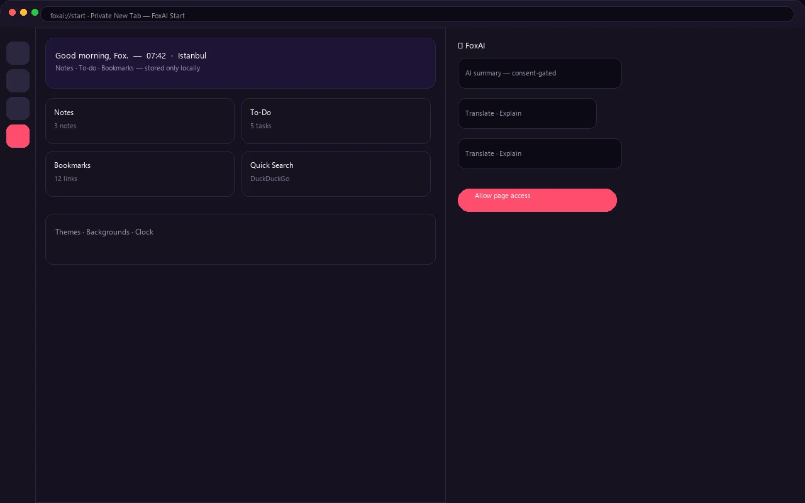
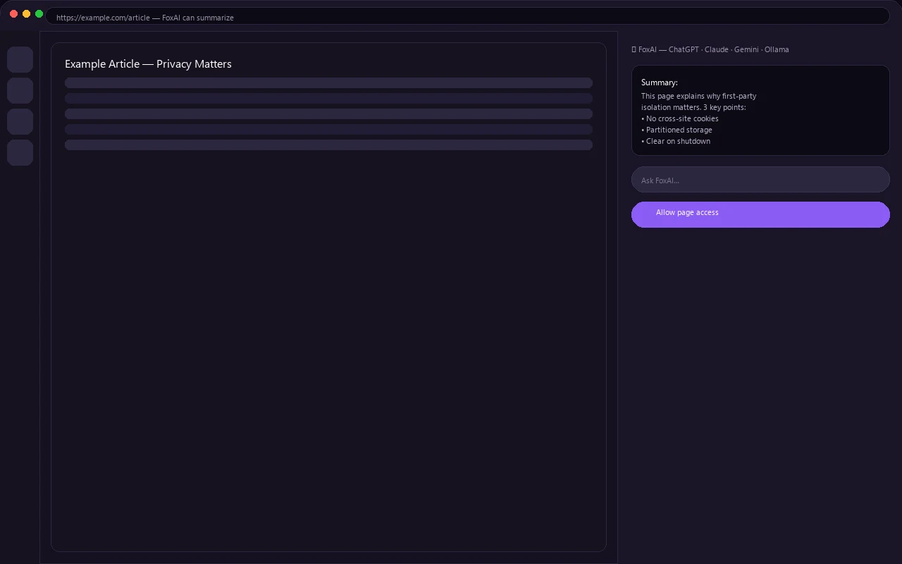
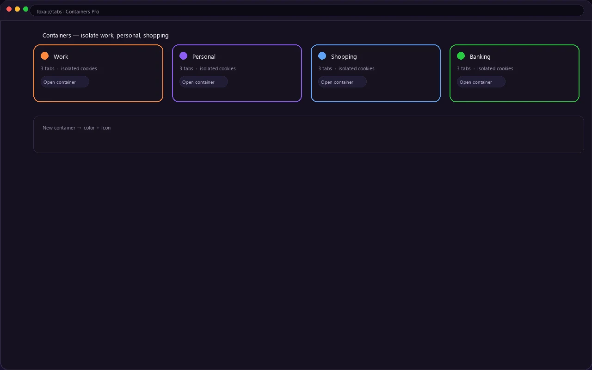
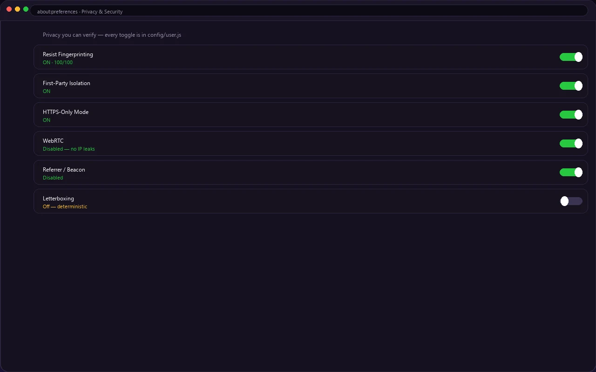
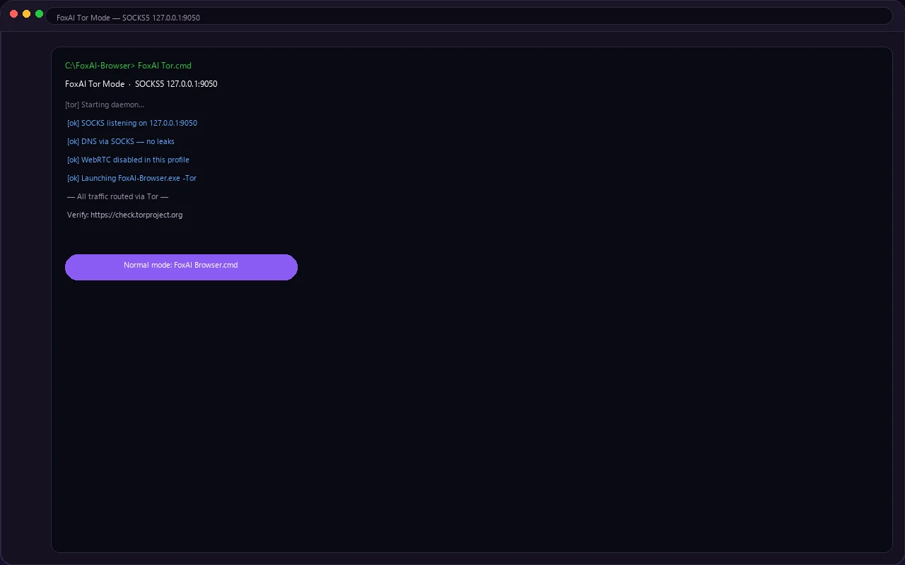
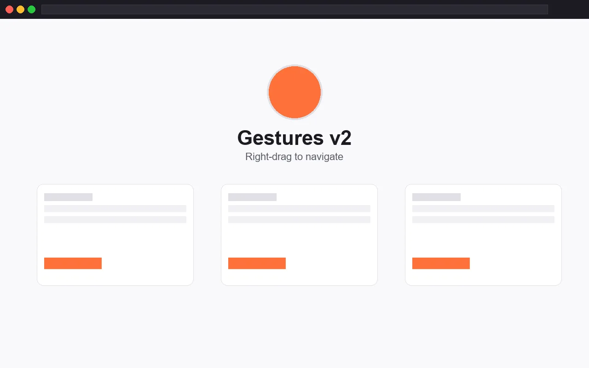
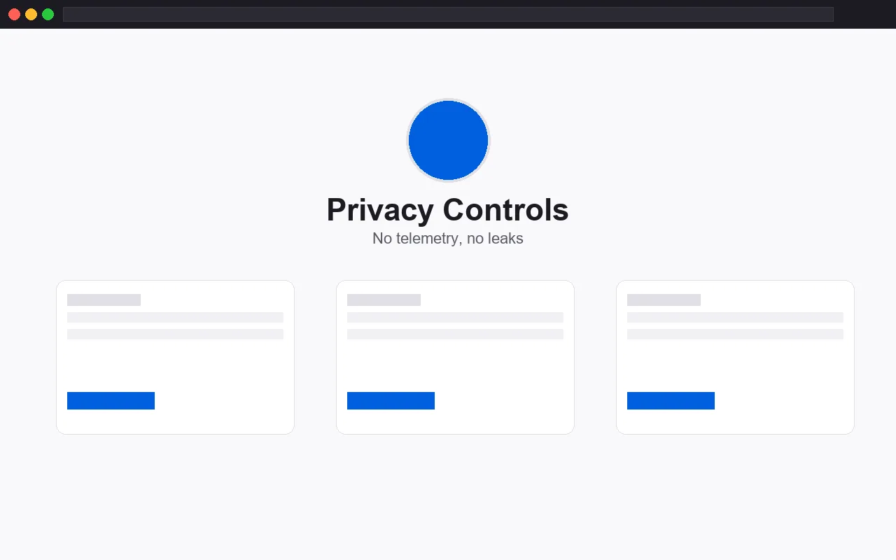
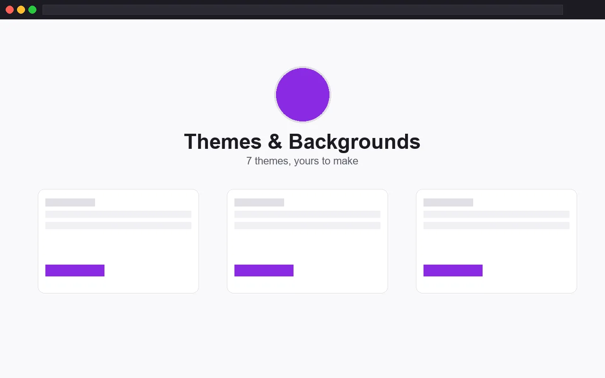

FoxAI Start
Private new-tab: clock, weather (opt-in), notes, to-do, bookmarks, custom backgrounds and 7 themes — only in your browser.
v3.1.0 · FoxAI One
A Firefox-based browser that respects you: no telemetry, no tracking, an AI sidebar that only sees what you allow, and a new-tab that is actually yours. Portable, open source, yours to verify.
Portable · Windows · Firefox ESR base · no installer · ~324 MB
FoxAI is a branded, portable build of Firefox ESR — hardened defaults, four built-in WebExtensions, and a PowerShell pipeline that reproduces every release from source. No installer, no background services, one folder you can delete.
The proven Firefox engine, rebranded and locked down: telemetry off, referrer off, first-party isolation on.
An assistant that waits for permission — ChatGPT, Claude, Gemini or local Ollama. No page data leaves until you click Allow.
Your new-tab, your notes, your bookmarks — stored only in the browser. Nothing phones home.
Browsers collect too much, show you too little, and add features you never asked for. FoxAI is the opposite.
The original project was wiped. FoxAI was rebuilt from a ~7,000-file salvage backup — and every sneaky default (telemetry, prefetch, referrer) was questioned and, where it leaks, turned off.
Each release lists the exact leak that was closed and how. Read the changelog, rebuild from source, run the tests. Nothing on faith.
Privacy is useless if the browser is painful. Notes, to-do, bookmarks, quick search, AI help, mouse gestures — without the harvest.
Private new-tab: clock, weather (opt-in), notes, to-do, bookmarks, custom backgrounds and 7 themes — only in your browser.
Summarize, translate, explain, rewrite any page. ChatGPT · Claude · Gemini · local Ollama — key never leaves the browser.
Right-drag to go back, forward, reload or new tab. Configurable presets via gestures.json.
Ads, trackers and fingerprinting blocked out of the box, enforced via policies.json.
DuckDuckGo by default, suggestions off. No keystrokes, no referrer, no predictive calls.
RFP on, first-party isolation, HTTPS-only, WebRTC off, beacon/ping off, strict CSP everywhere.
Deterministic fingerprint: letterboxing off, fixed metrics, UTC locked. 100% similarity across instances — canvas per-session randomized by design (CANVAS ENTROPY PASS).
Route all traffic via SOCKS5 127.0.0.1:9050 with "FoxAI Tor.cmd" — DNS through SOCKS, WebRTC dead, no leaks. Normal ↔ Tor by profile swap.
Container tabs UI for contextual identities — isolate work, personal, shopping.
Autoplay, camera, mic and geolocation default-deny — ask only when you allow.
Ask-before-new-types for uncommon downloads. No silent execution.
Blank startup, no crash-session restore. You decide what reopens.
make it yours, not theirs →
FoxAI Start is yours to make: themes, backgrounds, clock and search engine — all local.

New-tab with notes, to-do and quick search — stored only locally.

Summarize the current page with one consent click.

Mouse-only navigation that feels physical, not bolted on.
Screenshots — FoxAI Start, AI Sidebar, Containers (no stock images).
Pick your platform — same profile format, same privacy. Windows is prebuilt now; Linux & macOS ship as CI artifacts and upcoming release assets.
direct .zip · FoxAI Update.cmd for updates
Or build-linux/build.sh from source.
Also build-macos/build.sh on a Mac.
FoxAI-Browser-v3.1.0.zip anywhereFoxAI Browser.cmd (normal) or FoxAI Tor.cmd (Tor mode, after scripts/install-tor.ps1)Verify: tests/test-fingerprint-benchmark.ps1 → 100.0% + CANVAS ENTROPY PASS · browserleaks.com · ipleak.net
real screenshots, no mockups — pinky promise
Add real captures to screenshots/ — the gallery picks them up automatically. Until then, placeholders stay.





No dark magic. A real engine, standard extension APIs, and a reproducible pipeline.
Extended-support Firefox, rebranded "FoxAI Browser" via rcedit + foxai.cfg. Portable: unzip and run.
New-tab, AI, search & gestures installed via policies.json — sites cannot disable them.
FoxAI Start is a small React app with Vite, shipped as static assets under strict CSP.
build-manual.ps1 / build.ps1 packages XPIs, fetches uBlock, brands binaries, writes policies and the release zip.
WebDriver BiDi drives headless FoxAI; checks fingerprint 100/100, CANVAS ENTROPY, new-tab, search and AI.
No installer, no services, no registry. One folder you can delete.
build-manual.ps1 → release/FoxAI-Browser-v3.1.0.zip (324 MB).no tricks — just check the code :)
No claims without code. Read config/user.js and foxai.cfg — every toggle is there.
No black box. Every commit public, every build reproducible.
MPL-2.0 (browser) · GPLv3 (uBlock Origin) · issues and PRs welcome.
got questions? I've got answers ↴
A portable, hardened Firefox ESR build with FoxAI Start new-tab, AI sidebar, gestures and uBlock Origin preinstalled. One folder, no installer.
Yes — source at github.com/Can-5/foxai-browser (MPL-2.0; uBlock GPLv3). Every release is built reproducibly via build-manual.ps1.
Firefox ESR engine (Gecko), four WebExtensions (MV2) for new-tab/AI/search/gestures, React+Vite for the new-tab UI, PowerShell build pipeline, WebDriver BiDi tests.
Windows portable is primary. Linux: build from source via build-linux/. macOS: not yet prebuilt, source available.
Yes, free and open source. No premium, no telemetry, no ads of its own.
Latest zip on GitHub Releases (v3.1.0, ~324 MB). Also "Build from source" in the repo.
Open an issue or PR on GitHub. See CHANGELOG.md for style and testing (BiDi suite).
The sidebar supports ChatGPT, Claude, Gemini or local Ollama. Page content is sent only after you click "Allow page access" — one action at a time, revocable, keys stored locally.
No. Telemetry, referrer, beacon and studies are off. Only sites you visit are contacted. Check config/user.js — nothing phones home.
100/100 similarity across instances by locking metrics (UTC, fixed window, letterboxing off). Canvas is per-session randomized by design — CANVAS ENTROPY PASS means trackers can't link sessions.
Run scripts/install-tor.ps1 once, then start with FoxAI Tor.cmd. All traffic + DNS goes via SOCKS5 127.0.0.1:9050, WebRTC dead. Close Tor and start FoxAI Browser.cmd to return to normal.
Yes — no installer, no services, no registry. One folder you can move to USB or delete. Your profile stays inside the folder.
Download the new zip from Releases or run FoxAI Update.cmd. Or build from source: build-manual.ps1 → release/FoxAI-Browser-v3.1.0.zip.
Open an issue on GitHub, or email foxaibrowsersuppport@outlook.com — usually replies within a day. For bugs, include your foxai-browser version and OS.
Built by İlkay Can in Türkiye — Firefox ESR base, foxai-mark logo, Photon-inspired site. It's my daily browser made public. ♥